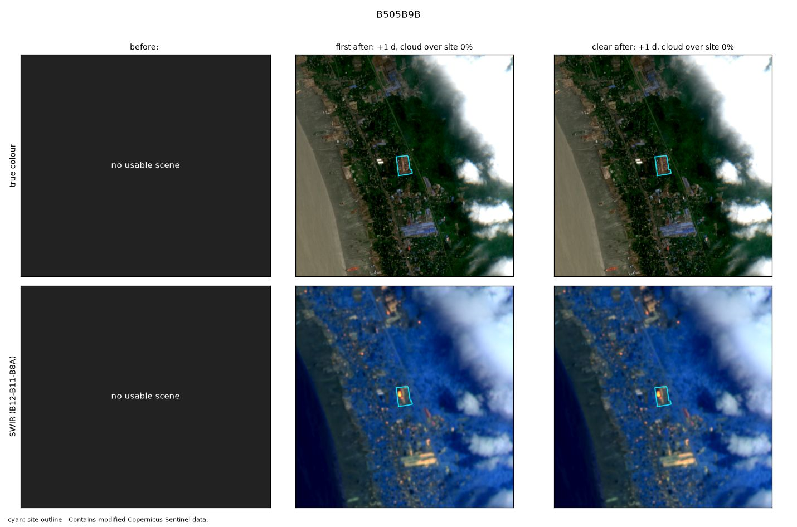
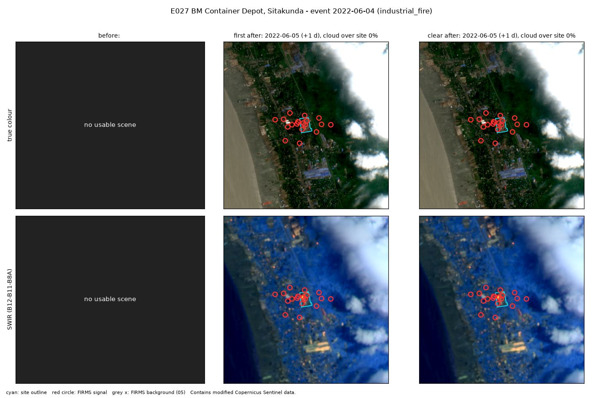

E027 · Industrial fire · Calibration half
BM Container Depot, Sitakunda
Site level
Corroborated evidence: FIRMS+image
FIRMS signal from +3.7 h (19 detections in window); image labelled active_fire
City level
Not corroborated
0 satellite passes with heat within 10 km. Expected: 0.05.
Location
- Site point
- 22.45602, 91.73717
- Basis
- OSM way/757725730 "BM Container Depot Ltd" (reviewed 2026-10-25)
- Uncertainty
- about 0.3 km
- OSM outline
- way/757725730 "BM Container Depot Ltd"
- City point
- Chattogram (GeoNames 1205733): 22.3384, 91.8317
- City to site
- 16.2 km
FIRMS heat detections
- Coverage
- VIIRS_SNPP_SP:2022-06-03+5d
VIIRS_NOAA20_SP:2022-06-03+5d
MODIS_SP:2022-06-03+5d - Gaps
- VIIRS_NOAA21:5d
- At the site
- 19 detections in the 5 days around the event. Usual rate: 0.0 per 5 days.
- After the heat filter
- 19 count as fire (4 new, 15 anomalous). 0 usual heat.
- First signal
- +3.7 h from the event
- Strongest signal
- 37 MW fire radiative power
City check
- Verdict
- Not corroborated
- Passes with heat
- 0 within 10 km of the city point, inside the time window
- Expected
- 0.05, from the area's own 30-day baseline (p = 1.0)
Sentinel-2
- Status
- No clear image in the 45 days before.
- First after
- 5 Jun 2022 (+1 d). Cloud over site 0%.
- Clear after
- 5 Jun 2022 (+1 d)
- Blind label
- active fire, high confidence
Images


Ground truth and sources
official death toll, fire burned ~3 days
Note: explosion 17:45Z